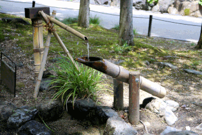

漢字
漢字 テスト
書き：
読み - テスト１
1 読み
１．ゴールめざして驀地に走る。
１．マッシグラ (1)
- 【驀地】まっしぐら
激しい勢いでひたすら進む様子。
「―に突進する」
2 読み
2．忽/乍ち売り切れる。
2．タチマ (1)
- 【忽ち】たちまち
非常に短い時間で。「―（に）品切れになった」。にわかに。
「―（のうちに）空が曇った」
3 読み
3．作戦中、警察は2人の銀行強盗を殛斃した。
3．キョクヘイ (1)
- 【殛斃】 きょくへい
生命を奪い取る。死なせる。殺す。
4 読み
4．農家の人達は鑱で土を耕す。
4．カナフグシ (1)
- 【鑱】カナフグシ
(古くは「かなぶくし」) 鉄製の、土を掘る道具。鉄製のふぐし。かなぶくせ。かなほぐし。
5 読み
5．以て其の粻を峙う。
5．チヤウ・チョウ (1) タクワ (2)
- 【粻】 チヤウ・チョウ
穀物のこと。 - 【峙える】たくわえる
そなえる。たくわえる。
6 読み
6．窓の外の鹿威が閑雅な音を立てている。
6．シシオドシ (1) カンガ (2)
- 【鹿威】 ししおどし
作物を荒らす鳥獣をおどし、田畑から追い払うための仕掛け。例、かかし・鳴子(なるこ)・添水(そうず)。
 - 【閑雅】かんが
1.風流でしとやかなこと。上品。
2.静かで趣があること。
{kind=link}
7 読み
7．枯れる田圃に穭が在る。
7．オロカオイ・ヒツジ・ヒツヂ (1)
- 【穭】おろかおい・ひつじ・ひづち
刈ったあと種がこぼれて自然に生えた稲。また、草木の切り株から生えた芽。ひつち。ひこばえ。
8 読み
8．崑崙火を失して玉石俱に焚く。
8．崑崙（こんろん) 火を失(シッ)して玉石(ギョクセキ)倶(とも)に焚(や)く (1)
- 【崑崙火を失して玉石倶に焚く】
価値の高いものも低いものも、同じようになくなってしまうことのたとえ。また、善人も悪人も区別なくわざわいを受けるたとえ。崑崙山に火災が起これば、貴重な玉(たま)も価値のない石ころも、一緒に焼けて失われてしまう意から。
9 読み
9．東瀛の彼方の島嶼。
9．トウエイ (1) トウショ (2)
- 【東瀛】 とうえい
中国大陸から見て東方の大海(東海)。 - 【島嶼】とうしょ
島。島々。
10 読み
10．昵懇/入魂の間柄 (1)。
- 【間柄】あいだがら
人と人との関係。
10．ジッコン (1)
- 【昵懇・入魂】カナフグシ
親しくつきあう間柄。懇意。
読み - テスト２
1 読み
1．いたずらをして屢/屡しかられた。
1．シバシバ (1)
- 【屡・屢・屢〻】しばしば
幾度も幾度も繰り返し。たびたび。
2 読み
2．おばあちゃんの手作り醤／肉醤／醢、最高に美味しいんだ。
2．シシビシオ (1)
- 【醤／肉醤／醢】ししびしお
魚や鳥などの肉の塩づけ。また、乾肉を刻み、麹と塩をまぜて製したものという。
3 読み
3．災害が発生し、多くの人々が避難所で僑／寓をしています。
3．カリズマイ (1)
- 【僑／寓】かりずまい
１. かりずまい。身を寄せる。やどる。「僑居」
２. 故郷を離れて外国に住む人。「華僑」
4 読み
4．あの鶏の唐揚げは、生姜／薑の風味がほんのり効いていて、絶品です。
4．ショウガ (1)
- 【生姜／薑】しょうが
しょうが科の多年生植物。根茎は横に連なり、夏の末に塊状の新根（＝新しょうが）をつける。老熟した根（＝ひねしょうが）は黄色で、辛みが強い。料理の付け合せ・薬味・漬物などにする。
5 読み
5．カエルの生活サイクルでは、蝌蚪が卵から孵化してから成体に変わるまでの段階です。
5．オタマジャクシ (1)
- 【蝌蚪】オタマジャクシ
オタマジャクシ（お玉杓子とも記す、英: tadpole）は、カエルの幼生の総称。
6 読み
6．彼は毎晩、必ず扃鑰をしてから寝る習慣がある。
6．ケイヤク (1)
- 【扃鑰】けいやく
門や戸などの鍵を掛けること。戸締まり。
7 読み
7．古い日本の城門には、厚い扃牖が取り付けられ、城内の安全を守るために設計されていました。
7．ケイユウ (1)
- 【扃牖】けいよう
閂（かんぬき）と窓のこと。門のこと。
読み - テスト３
書き - テスト１
1 書き
1．彼女の瞳にはおくぶかい情熱が宿っていた。
1．オクブカ (1)
- 【淵い ／ 渕い ／ 囦い ／ 㶜い】おくぶかい
１. ふち。水を深くたたえている所。「深淵」「淵海」
２. 物の多く集まっている所。「淵叢(エンソウ)」
３. ふかい。おくぶかい。静まりかえる。「淵淵」「淵然」